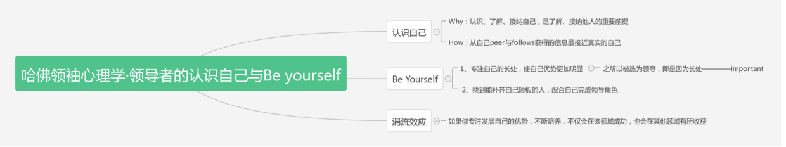

哈佛领袖心理学之认识自我&成就自我
在领袖心理学这门课中，我最深刻的感受莫过于此——认识自己&成就自己。
我们每个人都bu是完美的人，也很难做到完美。与其使自己的缺陷部分达到平均水平，不如全力发展自己擅长的部分。这就是认识自己与成就自己的核心！
认识自己，是我们要做的第一步。
不仅仅因为认识自己是使自己提高的第一步，还因为认识自己的人才能更好的认识他人。所以我们需要更好的认识了解自己，最后接纳自己，接纳自己的优势与不完美。
那么，我们应该怎么做呢？ professor推荐的方法是360度反馈计划，即从自己的上司、同事，家人，朋友，下属360度的接受关于自己的反馈，这样才能帮助更好的认识自己。
研究发现，在360度的反馈中，来自peers与follows的信息最能够反映真实的自己，所以多从自己的pers与follows接受反馈信息最容易使我们更好的认识自己
成就自己，也是我们成就的核心。
成就自己我们需要达到我们所能够达到的顶尖水平，只有这样我们才能从激烈的竞争中获得自己想要得到的东西。那么，How to do it ？
扬长补短！！！
所谓扬长，即是发扬自己的长处，将自己的主要精力集中在自己擅长的领域。以自己的天赋与勤奋，是自己达到这一领域的顶尖水平，这才是我们的核心竞争力，也是我们的不可替代性。
所谓补短，不是让我们训练自己的短板，而是找到能补足自己短板的人！！我们都知道，将自己的缺陷部分补充至一半所需要的精力远比发扬自己的长处需要更多的精力。如果我们将精力都用在使自己的短板达到一般水平，只会让我们荒废用以提高自己长处的时间，而最后 所能够取得的成就却十分有限。SO，找到能够补足自己短板的人才是最重要的“补短”的方法！
